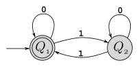
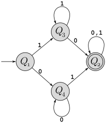

Consider the following context-free grammar \(G\) which generates some context-free language \(L(G)\):
\[ \begin{array}{l} S \rightarrow EEEF\\ E \rightarrow 0E\ |\ 1\\ F \rightarrow 0F\ |\ 0 \end{array} \]
What are the variables of this grammar?
What are the terminals of this grammar?
What is the start variable?
Give two strings of length 4 or greater that are in \(L(G)\), along with their derivations.
Draw parse trees for your two derivations in the preceding part.
Give two strings of length 4 or greater that are not in \(L(G)\).
Give a succinct description of the language \(L(G)\) using set-builder notation, and a description in plain English.
For each of the following languages, give a context-free grammar (in all cases, the alphabet \(\Sigma=\{0,1\}\)).
\(\{x0y1 \,|\, x,y\in\{0,1\}^*\) and \(|x|=|y|\}\) (in other words, if you divide the string in half, the first half ends in “0” and the second half ends in “1”)
\(\{w\,|\,w\in\{0,1\}^*\) and \(c_1(w)=2k\) for some integer \(k\}\) (this uses \(c_1\) from Assignment 1, so is the language of all binary strings with an even number of 1’s)
\(\{w\,|\,w\in\{0,1\}^*\) and \(w\) contains the string 101\(\}\)
\(\{0^p1^q\,|\,\) where \(q\geq p\geq 0 \}\)
Which of the languages above are regular? (You don’t need to justify your answer in any way – just list which ones are regular.)
Design a pushdown automata for each of the languages in question 2. Note that I am not asking you to perform the CFG-to-PDA conversion — design a PDA directly from the description of the language.
Convert the following grammar into Chomsky Normal Form (show and describe each step): \[ \begin{array}{l} S \rightarrow AA\\ A \rightarrow 0A1\ |\ B\\ B \rightarrow 1B0\ |\ S\ |\ \varepsilon\\ \end{array} \]
Perform the CFG-to-PDA conversion procedure from the book (pages 117–120) to convert the grammar from the previous question into a PDA that recognizes the same language.
The book proves that every regular language is a context free language by relying (Corollary 2.32) by first viewing the DFA for a regular language as a PDA that ignores its stack, and then using the fact that the PDA can be converted to a context free grammar. This is mathematically valid, but it produces a CFG that is far more complex than necessary. Here is a more direct DFA-to-CFG conversion method:
Given a DFA \(M=(Q,\Sigma,\delta,q_0,F)\), we create a CFG \(G=(V,\Sigma,R,S)\) as follows. Both \(M\) and \(G\) use the same input alphabet \(\Sigma\). To create \(G\), we have a variable representing each state in the DFA, so \(V=Q\). Second, we set the start variable in \(G\) to the start state in \(M\) (so \(S=q_0\)). Finally for each transition \(\delta(Q,a)=R\) we add a rule to \(G\) that is \(Q\rightarrow aR\), and or each final state \(Q\in F\) we add a rule \(Q\rightarrow\varepsilon\).
As an example of this conversion, consider the following DFA \(M\) (recognizing strings with an even number of 1’s):

The grammar \(G\) created from this DFA is shown below:
\[\begin{array}{l} Q_1 \rightarrow 0Q_1\ | \ 1Q_2\ |\ \varepsilon\\ Q_2 \rightarrow 0Q_2\ | \ 1Q_1\\ \end{array}\]Show a derivation of the string \(\texttt{0101110}\) in \(G\).
The string \(\texttt{010}\) is not in \(L(M)\), so should not be derivable in \(G\). Give a systematic argument why this is in fact the case.
Use this technique to derive the equivalent grammar for machine \(M_1\), shown below:
